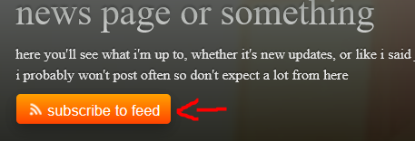

Here you can follow the simple steps on how to subscribe to feeds on your reader app, as well as learning more about RSS (i tried to be clear as possible so don't judge me xd)
RSS stands for Really Simple Syndication. It allows users and applications to access updates to websites. Subscribing to RSS feeds can allow a user to keep track of
many different websites in a single news aggregator, which constantly monitors sites for new content, removing the need for the user to manually check them. You could say
it's an easy way for you to keep up with news and information that's important to you. Websites usually use RSS feeds to publish frequently updated information, such as blog
entries, news headlines, and such. RSS is commonly written in .XML (or .RSS, i guess).
The following pages on this website that have their own feeds are:
1) News
2) Art Gallery
3) Sparta Remixes
4) My Music
5) Fanart
(just in case) If you're asking "Why does the 'Actual GD levels I made' page not have a feed"? It's because I lost my GD account months ago and still haven't figured out how to
get it back, mainly because I forgot my password AND e-mail (yes you can laugh at me now). Maybe I will add a feed for it once I do get my account back, who knows when
First, you'd have to download any RSS reader app available on the internet
But in my case, we'll be using QuiteRSS (i don't know any other readers besides this one so idrk how the other ones work LOL)
You can download any version of QuiteRSS here
Then, click on the "subscribe to feed" button on one of the pages listed above, which copies the feed link to your clipboard
Finally, paste the link you copied in your reader app and add it (QuiteRSS, that is, but you can still any other readers lol)
It should look something like this:
Aaaand you're done! You should see the latest posts, drawings, etc. on your RSS reader, if it doesn't work, please let me know!